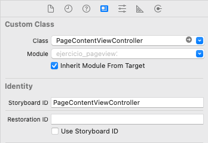

2- Controladores avanzados
En esta sesión veremos algunos controladores bastante comunes en aplicaciones iOS: el controlador paginado (UIPageViewController), las colecciones (UICollectionViewController) y el controlador de búsqueda para tablas (UISearchController).
Ejercicio 1 - UIPageViewController
El controlador paginado (UIPageViewController) sirve para poder cambiar entre varias páginas en pantalla que contienen información similar. Es una clase bastante configurable, ya que permite modificar:
- La orientación de las vistas de las páginas (horizontal o vertical).
- El estilo de transición (page-curl o scrolling).
- Para la transición page-curl, la localización del eje.
- Para la transición scrolling, el espacio entre páginas.
La clase UIPageViewController se considera un controlador contenedor (Container Controller). Los controladores contenedores pueden usarse para almacenar y gestionar múltiples View Controllers, y cambiar de uno a otro cuando sea necesario. Otros ejemplos de controladores contenedores son UINavigationController, UITabBarController y UISplitViewController.
Vamos a hacer una aplicación de ejemplo para ver las posibilidades del controlador paginado y cómo se programa. Nuestra app tendrá 4 páginas que contienen información de ayuda. Los controladores paginados se suelen usar frecuentemente para esto. El ejercicio quedará del siguiente modo cuando lo terminemos:
Para empezar crearemos un proyecto con la plantilla iOS > App y storyboard. Lo llamaremos ejercicio_pageview.
Creación de las vistas
Primero vamos a arrastrar un UIPageViewController al storyboard (fuera de la primera vista). Haremos lo mismo con otro UIViewController genérico, que es el que contendrá la información de las 4 pantallas. Usaremos la misma vista para las 4 pantallas porque en realidad su estructura es la misma. El controlador inicial del storyboard que viene por defecto también vamos a usarlo para superponer sobre él el controlador paginado como veremos más adelante.
Tenemos que asignar un identificador del storyboard para las dos vistas que hemos creado, de modo que podamos referenciarlas posteriormente desde nuestro código. Asigna el nombre PageViewController al controlador UIPageViewController, y también el nombre PageContentViewController al controlador genérico UIViewController:

En PageViewController verifica que el valor de transición es Scroll en lugar de Page Curl, ya que el segundo se suele utilizar para libros pero no quedaría bien en nuestra aplicación.
Implementación de la vista de contenido (PageContentViewController)
Vamos a diseñar la vista de contenido (PageContentViewController). Esta vista debería quedar como la siguiente:
Tendremos un UILabel arriba y una imagen detrás que ocupa toda la pantalla excepto la barra de estado superior.
Ahora tenemos la vista de contenido, pero nos hará falta un controlador para cambiarla dinámicamente. Crea un nuevo fichero con File > New File > Cocoa Touch Class, llámalo PageContentViewController y hazlo subclase de UIViewController, dejando desmarcado Also create Xib.
Volvemos al storyboard, nos situamos en el PageContentViewController y asignamos el controlador a la vista:

Enlazamos los outlets de la imagen y la etiqueta al controlador. Llámalos del siguiente modo:
@IBOutlet weak var titulo: UILabel!
@IBOutlet weak var imageView: UIImageView!
Añade también los siguientes atributos:
var pageIndex = 0
var titleText = ""
var imageFilename = ""
La variable pageIndex almacenará el índice de la página actual. Cambiamos también el método viewDidLoad para actualizar la imagen de fondo y el texto:
self.imageView.image = UIImage(named: self.imageFilename)
self.titulo.text = self.titleText
Implementación del primer controlador (ViewController)
Ya tenemos la vista del contenido. Ahora Vamos a modificar la primera vista del storyboard, añadiendo un botón Start again, abajo y centrado:
Crearemos una acción de este botón con ViewController. A este método lo llamaremos restart.
Implementación del controlador paginado (PageViewController)
La estructura que sigue el controlador paginado es la siguiente:
Por tanto, nuestro controlador paginado gestionará cuatro controladores de la misma clase.
Para usar UIPageViewController lo primero que tenemos que hacer es adoptar el protocolo UIPageViewControllerDataSource. El data source es el responsable de gestionar los controladores de las vistas de contenido cuando se le pidan, por lo que en los métodos de este protocolo indicaremos qué contenido mostrar para cada página.
En este ejemplo usaremos la clase ViewController como data source para la instancia de UIPageViewController que hemos creado. Por esto es necesario indicar que la clase ViewController implementa el protocolo UIPageViewControllerDataSource. Esta clase ViewController también será la responsable de proporcionar los datos de las páginas (imágenes y títulos).
Abre el fichero ViewController.swift y añade el delegado y estas tres propiedades (el modelo de datos):
class ViewController: UIViewController, UIPageViewControllerDataSource, UIPageViewControllerDelegate {
let pageTitles = ["Over 200 Tips and Tricks", "Discover Hidden Features", "Bookmark Favorite Tip", "Free Regular Update"]
let pageImages = ["page1.png", "page2.png", "page3.png", "page4.png"]
var pageViewController : UIPageViewController?
Puedes descargar las imágenes que vamos a usar desde aquí, y añadirlas a los Assets del proyecto.
Ya hemos creado el modelo de datos pero nos falta implementar los métodos del protocolo UIPageViewControllerDataSource, que deben ser al menos estos dos:
viewControllerAfterViewController: Aquí debemos indicar qué controlador mostrar en la siguiente página.viewControllerBeforeViewController: Aquí debemos indicar qué controlador mostrar en la página anterior.
Añade las siguientes líneas a ViewController.swift:
func viewControllerAtIndex(index : Int) -> PageContentViewController? {
if self.pageTitles.count == 0 || index >= self.pageTitles.count {
return nil
}
// Crear un nuevo controlador de contenido y pasar los datos
let pageContentViewController = self.storyboard?.instantiateViewController(withIdentifier: "PageContentViewController") as! PageContentViewController
pageContentViewController.imageFilename = self.pageImages[index]
pageContentViewController.titleText = self.pageTitles[index]
pageContentViewController.pageIndex = index
return pageContentViewController
}
func pageViewController(_ pageViewController: UIPageViewController, viewControllerBefore viewController: UIViewController) -> UIViewController? {
let pvc = viewController as! PageContentViewController
var index = pvc.pageIndex
if index == 0 || index == Foundation.NSNotFound {
return nil
}
index -= 1
return self.viewControllerAtIndex(index: index)
}
func pageViewController(_ pageViewController: UIPageViewController, viewControllerAfter viewController: UIViewController) -> UIViewController? {
let pvc = viewController as! PageContentViewController
var index = pvc.pageIndex
if index == Foundation.NSNotFound {
return nil
}
index += 1
if index == self.pageTitles.count {
return nil
}
return self.viewControllerAtIndex(index: index)
}
Como puedes ver, los métodos delegados de pageViewController son muy sencillos. Simplemente miramos el índice actual, lo incrementamos o decrementamos en función del método y devolvemos el controlador a mostrar.
El método viewControllerAtIndex es el que muestra el controlador indicado. Para ello, como puede verse, usamos la siguiente instrucción:
let pageContentViewController = self.storyboard?.instantiateViewController(withIdentifier: "PageContentViewController") as! PageContentViewController
Recuerda que habíamos asignado un storyboardID a los controladores. Este identificador lo hemos usado como referencia para crear las nuevas instancias, ya que si te fijas, PageContentViewController está suelto en el storyboard.
Ya lo tenemos casi. Para mostrar un indicador de página, tenemos que indicar el número de páginas (la cantidad de puntos a mostrar) y qué número de página se selecciona inicialmente. Añade los siguientes métodos al final de ViewController.swift:
func presentationCount(for pageViewController: UIPageViewController) -> Int {
return self.pageTitles.count
}
func presentationIndex(for pageViewController: UIPageViewController) -> Int {
return 0
}
Si no se implementan estos métodos no se mostrará el indicador de página.
Por último, vamos a crear el controlador paginado. Lo haremos en el método viewDidLoad de ViewController.swift. Cámbialo por el siguiente:
override func viewDidLoad() {
super.viewDidLoad()
// Creamos el controlador paginado
self.pageViewController = self.storyboard?.instantiateViewController(withIdentifier: "PageViewController") as! UIPageViewController?
self.pageViewController?.dataSource = self
self.pageViewController?.delegate = self
// Creamos el primer controlador de contenido
let startingViewController = self.viewControllerAtIndex(index: 0)
let viewControllers = [startingViewController!]
self.pageViewController?.setViewControllers(viewControllers, direction: UIPageViewController.NavigationDirection.forward, animated: false, completion: nil)
// Cambiamos el tamaño para que quepa el botón de abajo
self.pageViewController?.view.frame = CGRect(x: 0, y: 0, width: self.view.frame.size.width, height: self.view.frame.size.height-30)
// Añadimos el primer controlador de contenido
self.addChild(self.pageViewController!)
self.view.addSubview((self.pageViewController?.view)!)
self.pageViewController?.didMove(toParent: self)
}
En este método hemos creado una instancia de PageViewController. Después especificamos el data source (la fuente de datos), que es la clase actual. Creamos el primer controlador de contenido, lo añadimos a un array de controladores, y lo asignamos al controlador de la página para mostrarlo.
Compilamos y ejecutamos. Debería funcionar, pero la vista sale descolocada debido a que falta ajustar las constraints. Para arreglarlo, seleccionamos el PageContentViewController en el storyboard y marcamos Reset to suggested constraints. Ejecutamos de nuevo y podemos ver que el contenido ya se muestra bien, aunque todavía falta el botón de abajo. Seleccionamos nuestro ViewController y marcamos de nuevo Reset to suggested constraints. Ahora sí que vemos el botón. Lo único que nos falta son los puntos de abajo, que están ahí pero que no se ven porque son del mismo color que el fondo. Vamos a cambiarles el color.
Abre el fichero AppDelegate.swift, y añade las siguientes líneas en didFinishLaunchingWithOptions:
let pageControl = UIPageControl.appearance()
pageControl.pageIndicatorTintColor = UIColor.lightGray
pageControl.currentPageIndicatorTintColor = UIColor.black
pageControl.backgroundColor = UIColor.white
Si el botón de Start again se te queda debajo de los puntos, bájalo un poco en la vista, resetea de nuevo las constraints y recompila.
Sólo nos falta la implementación de este botón para volver a la primera página. El método restart en ViewController.swift debería quedar de la siguiente manera:
@IBAction func restart(_ sender: AnyObject) {
let startingViewController = self.viewControllerAtIndex(index: 0)
let viewControllers = [startingViewController!]
self.pageViewController?.setViewControllers(viewControllers, direction: UIPageViewController.NavigationDirection.reverse, animated: false, completion: nil)
}
En este ejercicio hemos hecho la parte básica para usar un UIPageViewController con storyboards. Se ha implementado la transición en scroll, pero este controlador es muy configurable y como hemos visto podemos usarlo también para implementar una app con navegación de tipo libro.
Ejercicio 2 - UICollectionViewController
Las colecciones pueden usarse como alternativa a las tablas cuando tenemos una distribución de los elementos de tipo rejilla (grid), por ejemplo.
Para implementar una colección es necesario indicar el número de secciones, el tamaño de las celdas, y especificar los contenidos de cada celda. El controlador de la colección automáticamente reorganizará las posiciones de las celdas en función de su tamaño y del tamaño de la pantalla.
Ejemplo UICollectionViewController
Vamos a implementar un ejercicio sencillo para ver cómo funciona UICollectionViewController.
Creamos un proyecto llamado ejercicio_collection, de tipo iOS > App con storyboard. Arrastramos al storyboard (fuera de la vista inicial) un nuevo UICollectionViewController, y movemos en el storyboard la flecha que apunta al controlador inicial para que ahora sea nuestro UICollectionViewController. Borramos el fichero ViewController.swift y también su controlador del storyboard, ya que no los necesitaremos.
Creamos un nuevo controlador con New > File > Cocoa Touch. Lo llamaremos CollectionViewController, subclase de UICollectionViewController, dejando desmarcado Also create Xib. En el storyboard seleccionamos nuestra vista e indicamos cuál va a ser el controlador:
Creación de las celdas
En la vista de UICollectionViewController veremos un cuadrado en la parte superior izquierda, que se corresponde con una celda. Vamos a crear una clase propia para las celdas, de forma que podamos configurarlas para darles el aspecto que queramos. El procedimiento es similar al que hicimos en el ejercicio de celdas personalizadas.
Creamos una nueva clase llamada CollectionViewCell, subclase de UICollectionViewCell, y desmarcando Also create XIB.
En el storyboard seleccionamos la celda que hay dentro de nuestro controlador de colecciones, y cambiamos la clase UICollectionViewCell por la que hemos creado, CollectionViewCell.
En la pestaña de Attributes Inspector escribimos el identificador idCelda para nuestras celdas.
Seleccionamos el objeto Collection View en el storyboard, y en el Size inspector cambiamos el tamaño de las celdas (Cell Size) a 100 x 100 puntos.
Como puede verse, hay más atributos que podríamos cambiar, como el tamaño de la cabecera y pie, el espaciado entre celdas, o los insets, que se pueden usar para crear bordes alrededor de las celdas.
También tenemos que cambiar el tamaño de la celda, seleccionando en el storyboard nuestro idCelda:
En este ejercicio configuraremos las celdas para que muestren una imagen. Para ello, desde el Interface Builder arrastramos un UIImageView a la celda, de forma que ocupe todo su tamaño. Ahora creamos un outlet de la imagen en nuestra celda personalizada y lo llamamos imageView.
Ya tenemos la vista preparada, sólo falta añadir los datos.
Configurar los datos
Nos queda configurar el data source, es decir, implementar los métodos delegados de UICollectionViewDataSource para mostrar los datos de las celdas. Abre el fichero CollectionViewController.swift y mira los métodos de la sección UICollectionViewDataSource. Como puede verse, nuestra clase debe implementar:
numberOfSections. Como en una tabla, debemos indicar el número de secciones. Este método es opcional, y si no lo implementamos se asumirá una sóla sección.numberOfItemsInSection. Aquí indicaremos la cantidad de items (celdas) para cada sección.cellForItemAt: Como en una tabla, en este método indicaremos el contenido de cada celda.
Nota: Si quieres más información sobre los métodos de un protocolo o de cualquier clase Cocoa, en la vista de código de XCode puedes pinchar sobre el nombre del mismo con Option+click para ver la ayuda rápida, o con Command+click para ver más opciones.
Vamos a crear los datos de nuestra aplicación. Descarga este fichero con imágenes, y añádelas todas al proyecto. Declaramos un array en CollectionViewController para almacenarlas:
var foodImages = [String]()
Inicializamos el array al final del método viewDidLoad de CollectionViewController.
for i in 1..<17 {
let image = "\(i).jpg"
self.foodImages.append(image)
}
Nota: En un bucle for lo normal es usar fast enumeration, pero en casos como este (cuando tenemos rangos) podemos usar valores numéricos.
Modificamos los métodos delegados desde CollectionViewController:
override func collectionView(_ collectionView: UICollectionView, numberOfItemsInSection section: Int) -> Int {
return self.foodImages.count
}
override func collectionView(_ collectionView: UICollectionView, cellForItemAt indexPath: IndexPath) -> UICollectionViewCell {
let cell = collectionView.dequeueReusableCell(withReuseIdentifier: "idCelda", for: indexPath) as! CollectionViewCell
// Configure the cell
if let image = UIImage(named:self.foodImages[indexPath.row]) {
cell.imageView.image = image
}
return cell
}
Podemos comentar el método numberOfSections, ya que su implementación es opcional.
Si ejecutamos la aplicación en el simulador veremos algo como esto:
Y en landscape puede verse cómo se adapta:
Evidentemente, no queda muy bien que las imágenes estén tan pegadas a los bordes. Vamos a cambiar esto con los insets, desde las propiedades de la colección:
Como puedes ver, ahora queda algo mejor. Desde código también podemos jugar con los tamaños de los bordes cambiando los atributos del controlador en función del dispositivo, pero para este ejemplo no es necesario. Además podríamos hacer que cuando se pulse una imagen se mostrara una vista de la misma a pantalla completa, aunque esto tampoco lo implementaremos en este ejercicio.
Ejercicio 3 - Controlador de búsqueda
En las aplicaciones iOS es común encontrar una barra de búsqueda asociada a una tabla en la que se muestran los resultados. Hasta iOS7 esto se impleentaba con la clase UISearchDisplayController. Este controlador era bastante complejo, por lo que Apple decidió remplazarlo por UISearchController. Vamos a ver cómo se implementa este último, ya que es bastante más sencillo, aunque aun así no es trivial.
Creación de la tabla
Crea un proyecto llamado ejercicio_search usando la plantilla iOS > App. Para empezar vamos a añadir al storyboard un nuevo controlador de tipo Table View Controller.
Hacemos que nuestra tabla sea lo primero que aparezca cuando se lance la app arrastrando la flecha horizontal que apunta al primer controlador (la vista vacía) hacia nuestro nuevo Table View Controller. Ya podemos borrar esta vista vacía del storyboard y también borramos el fichero ViewController.swift asociado a la vista que hemos eliminado.
Ya hemos creado la vista de la tabla, pero vamos a usar también un fichero de código como controlador para poder programar los elementos de la celda. Seleccionamos File > New > File > Cocoa Touch Class, y le damos el nombre TableViewController, subclase de UITableViewController, dejando sin marcar Also create XIB file.
A continuación asignamos la vista al controlador. Para esto seleccionamos el controlador en el storyboard, y desde el Identity Inspector le asignamos la clase que hemos creado TableViewController, como se muestra en la imagen:
También embebemos el controlador en una barra de navegación, seleccionándolo en el storyboard e indicando desde el menú de XCode Editor > Embed in > Navigation Controller. Para ponerle un título, añadimos el siguiente código en el método viewDidLoad de TableViewController:
self.title = "Búsqueda"
Ahora vamos a añadir unos datos de ejemplo a la clase TableViewController:
let contenido = ["En","un","lugar","de","la","mancha"]
Y completamos el código de de esta clase para gestionar la tabla:
override func tableView(_ tableView: UITableView, numberOfRowsInSection section: Int) -> Int {
// #warning Incomplete implementation, return the number of rows
return contenido.count
}
override func tableView(_ tableView: UITableView, cellForRowAt indexPath: IndexPath) -> UITableViewCell {
let cell = tableView.dequeueReusableCell(withIdentifier: "Cell", for: indexPath)
// Configure the cell...
let c = contenido[indexPath.row]
cell.textLabel!.text = c
return cell
}
Por último, debemos enlazar la celda a nuestro controlador, indicando el nombre Cell que le hemos dado en el código:
En este momento ya podemos ejecutar el código y tendremos una tabla funcional, aunque sin la barra de búsqueda:
Implementación del controlador de búsqueda
Como se ha mencionado anteriormente, el controlador de búsqueda ha ido evolucionando con las distintas versiones de XCode.
Antes de iOS7, se implementaba arrastrando un objeto de tipo Search Bar and Search Display Controller al principio de la tabla desde el Interface Builder. La gestión de esto era bastante complicada, ya que teníamos varias conexiones que debíamos gestionar manualmente.
Ahora, Search Display Controller es un controlador deprecated (obsoleto), y Apple recomienda usar la clase UISearchController introducida en iOS7. Paradójicamente, esta clase no está en el Interface Builder, y sólo podemos usarla mediante código, pero se simplifica bastante el procedimiento. Es así como vamos a hacerlo en nuestro ejemplo.
Para esto, primero debemos crear nuestro searchController y un array searchResults que contendrá los resultados filtrados de la búsqueda. Al principio de la clase TableViewController declaramos las siguientes variables privadas (ya que no hace falta acceder a ellas desde fuera del controlador):
private var searchController : UISearchController?
private var searchResults = [String]()
En el método viewDidLoad de TableViewController creamos la barra de búsqueda y la inicializamos. Añadimos lo siguiente al final del método:
// Creamos una tabla alternativa para visualizar los resultados cuando se seleccione la búsqueda
let searchResultsController = UITableViewController(style: .plain)
searchResultsController.tableView.dataSource = self
searchResultsController.tableView.delegate = self
// Asignamos esta tabla a nuestro controlador de búsqueda
self.searchController = UISearchController(searchResultsController: searchResultsController)
self.searchController?.searchResultsUpdater = self
// Especificamos el tamaño de la barra de búsqueda
if let frame = self.searchController?.searchBar.frame {
self.searchController?.searchBar.frame = CGRect(x: frame.origin.x, y: frame.origin.y, width: frame.size.width, height: 44.0)
}
// La añadimos a la cabecera de la tabla
self.tableView.tableHeaderView = self.searchController?.searchBar
// Esto es para indicar que nuestra vista de tabla de búsqueda se superpondrá a la ya existente
self.definesPresentationContext = true
Ahora tendremos que cambiar los métodos numberOfRowsInSection y cellForRowAtIndexPath. Esto lo haremos porque en función de si está o no activa la barra de búsqueda tendremos que mostrar una información u otra. Si la vista de la tabla es la del controlador de búsqueda, tendremos que usar los elementos de la lista filtrada. En caso contrario, los de la lista principal.
override func tableView(_ tableView: UITableView, numberOfRowsInSection section: Int) -> Int {
let src = self.searchController?.searchResultsController as! UITableViewController
if tableView == src.tableView {
return self.searchResults.count
}
else {
return self.contenido.count
}
}
override func tableView(_ tableView: UITableView, cellForRowAt indexPath: IndexPath) -> UITableViewCell {
let cell = tableView.dequeueReusableCell(withIdentifier: "Cell", for: indexPath)
let src = self.searchController?.searchResultsController as! UITableViewController
let object : String?
if tableView == src.tableView {
object = self.searchResults[indexPath.row]
}
else {
object = contenido[indexPath.row]
}
cell.textLabel!.text = object
return cell
}
Añade el protocolo de la barra de búsqueda a la clase TableViewController. Este protocolo se llama UISearchResultsUpdating. A continuación tenemos que crear el método delegado para actualizar los datos de la tabla cuando el usuario modifique el texto de búsqueda. Añade el siguiente código:
func updateSearchResults(for searchController: UISearchController) {
// Cogemos el texto introducido en la barra de búsqueda
let searchString = self.searchController?.searchBar.text
// Si la cadena de búsqueda es vacía, copiamos en searchResults todos los objetos
if searchString == nil || searchString == "" {
self.searchResults = self.contenido
}
// Si no, copiamos en searchResults sólo los que coinciden con el texto de búsqueda
else {
let searchPredicate = NSPredicate(format: "SELF BEGINSWITH[c] %@", searchString!)
let array = (self.contenido as NSArray).filtered(using: searchPredicate)
self.searchResults = array as! [String]
}
// Recargamos los datos de la tabla
let tvc = self.searchController?.searchResultsController as! UITableViewController
tvc.tableView.reloadData()
// Deseleccionamos la celda de la tabla principal
if let selected = tableView.indexPathForSelectedRow {
tableView.deselectRow(at:selected, animated: false)
}
}
Si ejecutamos el programa veremos que casi lo tenemos listo. Pero el (pequeño) problema es que cuando se pulse sobre la barra de búsqueda la app fallará.
Para arreglar este error debemos asignar el prototipo de la celda del storyboard. En CellForRowAt IndexPath sustituye la siguiente línea:
let cell = tableView.dequeueReusableCell(withIdentifier: "Cell", for: indexPath)
let cell = self.tableView.dequeueReusableCell(withIdentifier: "Cell", for: indexPath)
Si ejecutas de nuevo el programa verás como la barra de búsqueda ahora funciona (aparece un teclado y es funcional). Sin embargo, si queremos leer o usar el valor que el usuario ha introducido todavía tenemos que añadir lo siguiente:
override func tableView(_ tableView: UITableView, didSelectRowAt indexPath: IndexPath) {
let object : String
if let indexPath = self.tableView.indexPathForSelectedRow {
object = self.contenido[indexPath.row]
}
else {
let sc = self.searchController?.searchResultsController as! UITableViewController
object = self.searchResults[(sc.tableView.indexPathForSelectedRow?.row)!]
}
print (object)
}
Como puede verse, este método asigna una fuente de datos u otra dependiendo de si la barra de búsqueda está seleccionada o no.
Esto es lo básico para crear una barra de búsqueda asociada a una tabla. Como puedes ver, el diseño podría ser más sencillo pero tampoco es es demasiado complicado, sobre todo si lo comparamos con cómo se hacía antes de iOS7.